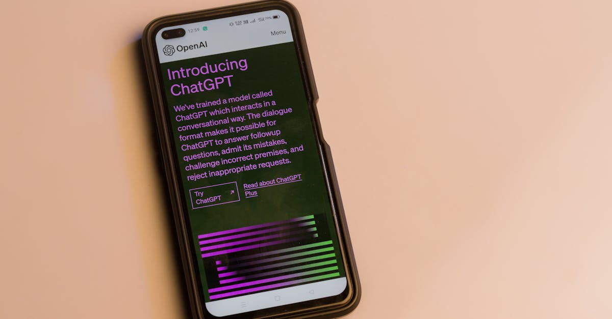

L'Affrontement Qui Secoue la Silicon Valley
La semaine dernière a marqué le début d'un feuilleton judiciaire qui tient en haleine la planète tech et financière : le procès intenté par Elon Musk contre OpenAI. L'homme derrière Tesla et SpaceX, autrefois co-fondateur visionnaire de l'organisation à but non lucratif OpenAI, accuse aujourd'hui ses anciens partenaires de trahison fondamentale. L'argument principal de Musk ? OpenAI aurait dévié de sa mission originelle, celle de développer une intelligence artificielle générale (AGI) au bénéfice de l'humanité, pour se transformer en une entité commerciale aux motivations obscures, dominée par Microsoft. Pour Musk, c'est une question de principe, une trahison de la confiance qui a présidé à la création de l'entreprise en 2015. Il dépeint un tableau où la quête de profit aurait supplanté l'idéal altruiste, une dérive qu'il juge dangereuse pour l'avenir de l'IA. La première semaine d'audience a vu les avocats de Musk tenter d'établir cette narrative de rupture, présentant des emails et des témoignages visant à prouver le changement d'orientation d'OpenAI. La tension est palpable, car les implications de ce procès dépassent largement le cadre d'un simple litige entre personnalités milliardaires. Il touche au cœur de la gouvernance de l'IA, à son accès, et potentiellement, à la manière dont ces technologies révolutionnaires seront intégrées dans nos vies, y compris dans nos stratégies d'épargne et d'investissement. Cet article, pour Epargne IA, se propose de décortiquer les enjeux de cette bataille juridique et ses répercussions sur l'avenir de l'investissement automatisé intelligent.
👉 À lire : Mphasis : L'IA au cœur de la stratégie, un tournant pour l'épargne ?

Les Origines d'une Rupture : Une Vision Partagée puis Divergente
Il y a près de dix ans, l'idée d'une IA ouverte et bénéfique pour tous semblait être le moteur principal. Elon Musk, aux côtés d'autres figures emblématiques comme Sam Altman et Ilya Sutskever, avait fondé OpenAI avec une ambition claire : éviter que la puissance de l'intelligence artificielle ne tombe entre quelques mains trop avides, qu'elles soient étatiques ou corporatives. La structure initiale, une organisation à but non lucratif, était censée garantir cette neutralité et cet esprit de partage. Cependant, les défis techniques et financiers inhérents au développement d'une IA de pointe se sont rapidement révélés immenses. Les besoins en puissance de calcul et en talents spécialisés ont explosé, poussant OpenAI à chercher des financements massifs. C'est là que les chemins ont commencé à diverger. L'arrivée de Microsoft comme partenaire stratégique majeur, avec un investissement de plusieurs milliards de dollars, a marqué un tournant. Si, officiellement, OpenAI maintient une certaine indépendance, Musk soutient que cet accord a fondamentalement altéré l'ADN de l'entreprise. Il affirme que la pression pour monétiser les avancées, notamment via les produits basés sur les modèles GPT, est devenue prépondérante, au détriment de la recherche désintéressée promise initialement. La cour est désormais le théâtre de cette divergence de visions : une lutte entre l'idéal de l'IA comme bien commun et la réalité économique d'un secteur en pleine effervescence, où les investissements se chiffrent en milliards. Cette tension entre mission et profit est un thème récurrent dans le monde de la tech, mais rarement à une échelle aussi critique.
👉 À lire : IA : Les Mag 7 Maintennent-ils leurs Dépenses ?
Les Accusations Clés d'Elon Musk : Biais Commercial et Manque de Transparence
Au cœur de la plainte déposée par Elon Musk se trouvent plusieurs accusations graves. Premièrement, il reproche à OpenAI d'avoir violé son accord fondateur en privilégiant la maximisation des profits, notamment via son partenariat étroit avec Microsoft. Musk soutient que OpenAI est désormais une filiale de facto de Microsoft, recevant des licences exclusives sur les technologies développées et intégrant ces innovations dans les produits du géant de Redmond, avant même qu'elles ne soient accessibles au public ou à d'autres acteurs. Cette exclusivité, selon lui, va à l'encontre de l'objectif initial de démocratisation de l'IA. Deuxièmement, Musk dénonce un manque de transparence flagrant. Il affirme que les décisions stratégiques, les avancées technologiques et même les risques associés aux modèles d'IA ne sont plus partagés ouvertement comme cela était prévu. L'opacité entourant le développement de modèles de plus en plus puissants, tels que GPT-4 et ses successeurs, alimente les craintes de Musk quant à un possible développement non maîtrisé de l'IA. Il pointe du doigt la transformation de la structure de gouvernance, passant d'un conseil d'administration à but non lucratif à une entité plus complexe où les intérêts commerciaux semblent primer. Ces accusations soulèvent des questions fondamentales : comment réguler une technologie aussi puissante et évolutive ? Comment s'assurer que son développement serve réellement l'intérêt général et non pas uniquement les intérêts d'une entreprise ou de ses partenaires ? Pour les investisseurs et les épargnants, comprendre ces dynamiques est crucial, car l'IA remodèle déjà de nombreux secteurs, y compris celui de la finance.

La Défense d'OpenAI : Mission Préservée, Partenariat Nécessaire
Face aux attaques d'Elon Musk, OpenAI et ses dirigeants, notamment Sam Altman, ne restent pas silencieux. Leur défense repose sur plusieurs piliers. Ils réfutent catégoriquement l'idée d'une trahison de leur mission originelle. Selon eux, la structure hybride actuelle, avec une branche à but lucratif supervisée par une entité à but non lucratif, est la seule manière viable de financer le développement d'une AGI tout en maintenant un contrôle sur sa sécurité et son éthique. Le partenariat avec Microsoft n'est pas vu comme une soumission, mais comme une collaboration stratégique essentielle pour obtenir les ressources nécessaires (calcul, financement) sans compromettre l'indépendance fondamentale de la recherche. OpenAI insiste sur le fait que les bénéfices générés par sa branche commerciale sont réinvestis dans la recherche pour faire avancer la mission globale. Ils soulignent également que la transparence a été maintenue dans la mesure du possible, tout en reconnaissant la nécessité de protéger la propriété intellectuelle et les avancées concurrentielles. Les représentants d'OpenAI mettent en avant les progrès réalisés et les bénéfices potentiels de leurs technologies pour la société, arguant que sans le soutien de partenaires comme Microsoft, ces avancées n'auraient tout simplement pas été possibles. Ils présentent Musk non pas comme un défenseur de l'idéal originel, mais comme quelqu'un dont les attentes étaient peut-être irréalistes au regard des contraintes économiques et techniques. La cour devra démêler ces versions contradictoires, évaluant la bonne foi des deux parties et l'interprétation de l'accord fondateur. C'est un exercice délicat, où les motivations personnelles se mêlent aux impératifs technologiques et financiers.
L'Impact sur l'Industrie de l'IA : Régulation et Avenir de la Recherche
Ce procès jette une lumière crue sur les défis inhérents à la gouvernance de l'intelligence artificielle. L'IA, en particulier l'AGI, est souvent décrite comme la technologie la plus transformative que l'humanité ait jamais développée. Sa puissance potentielle, tant pour le bien que pour le mal, soulève des questions urgentes sur la nécessité d'une régulation. Le conflit entre Musk et OpenAI met en évidence la tension entre l'innovation rapide, souvent tirée par la compétition et les intérêts commerciaux, et le besoin de cadres éthiques et de sécurité robustes. Si Musk gagne, cela pourrait potentiellement renforcer les exigences de transparence et de contrôle public sur les développements majeurs de l'IA. À l'inverse, une victoire d'OpenAI pourrait valider le modèle actuel, où les partenariats commerciaux sont considérés comme indispensables pour financer la recherche de pointe. Au-delà des aspects juridiques, cette affaire stimule le débat public sur la direction que doit prendre le développement de l'IA. Doit-on privilégier une approche ouverte et collaborative, au risque de voir des acteurs moins scrupuleux s'en emparer ? Ou faut-il accepter une certaine concentration du pouvoir et des investissements massifs, en espérant que les acteurs dominants agissent de manière responsable ? Ces questions résonnent particulièrement dans le domaine de l'investissement. L'IA transforme déjà les marchés financiers, de l'analyse prédictive au trading algorithmique. L'émergence d'outils d'épargne et de placement automatisés, comme ceux promus par Epargne IA, repose sur ces avancées. Comprendre qui contrôle et comment ces technologies sont développées est donc essentiel pour anticiper leur impact futur sur nos finances.

Conséquences pour l'Investissement Automatisé et l'Épargne Intelligente
L'affaire Musk contre OpenAI, bien que centrée sur les origines et la gouvernance d'une entreprise d'IA, a des répercussions profondes et souvent sous-estimées sur le secteur de l'épargne et de l'investissement intelligent. Les outils d'investissement automatisé, les robots-conseillers, et les algorithmes d'analyse de marché qui gagnent en popularité s'appuient massivement sur les avancées en matière d'intelligence artificielle. Si le développement de l'IA venait à être freiné, ou s'il prenait une direction moins ouverte et plus centralisée suite à ce procès, cela pourrait influencer la disponibilité et la nature des technologies sous-jacentes à ces services financiers. Par exemple, une OpenAI moins performante ou plus restrictive dans le partage de ses modèles pourrait ralentir l'innovation dans le domaine de l'analyse prédictive ou de la gestion de portefeuille automatisée. À l'inverse, si le procès aboutit à une plus grande transparence et à une répartition plus large des bénéfices de l'IA, cela pourrait accélérer l'accès à des outils d'investissement de plus en plus sophistiqués pour le grand public. Chez Epargne IA, nous suivons de près ces développements. Notre mission est de rendre l'épargne intelligente et l'investissement automatisé accessibles à tous, en exploitant le potentiel de l'IA. Ce procès nous rappelle l'importance cruciale de comprendre non seulement la technologie elle-même, mais aussi l'écosystème complexe dans lequel elle évolue. Les décisions prises aujourd'hui concernant la gouvernance de l'IA auront un impact direct sur les outils financiers de demain. Il est donc essentiel que les épargnants et investisseurs soient conscients de ces enjeux pour faire des choix éclairés.
Les Témoignages Clés et les Preuves Présentées
La première semaine du procès a été marquée par la présentation des arguments initiaux et l'audition de quelques témoins clés. Les avocats d'Elon Musk ont cherché à établir la chronologie de la rupture, s'appuyant notamment sur des échanges de courriels entre Musk, Altman et d'autres figures d'OpenAI. Ces messages, s'ils sont authentifiés et contextualisés, pourraient révéler des tensions croissantes et des désaccords sur la stratégie de l'entreprise. Un point particulièrement mis en avant concerne les inquiétudes de Musk face à la puissance de calcul nécessaire pour entraîner des modèles comme GPT-4, et sa frustration face à ce qu'il percevait comme un manque de partage des avancées avec la communauté scientifique. Les témoignages visent à démontrer qu'OpenAI, sous l'influence de Microsoft, aurait délibérément choisi une voie commerciale au détriment de la mission initiale. Du côté d'OpenAI, la défense s'attache à présenter ces mêmes éléments sous un jour différent. Ils soutiennent que les discussions avec Musk étaient souvent empreintes d'une vision idéaliste, déconnectée des réalités financières et techniques. Les avocats d'OpenAI ont commencé à esquisser leur contre-argumentation, mettant en avant la nécessité des partenariats pour survivre et prospérer dans un domaine aussi coûteux. Ils soulignent également que Musk lui-même aurait envisagé de créer une entreprise d'IA indépendante, suggérant que sa démarche actuelle pourrait être motivée par des intérêts personnels plutôt que par une défense désintéressée de l'idéal originel. La cour est confrontée à la tâche complexe de discerner la vérité à travers des récits divergents, souvent teintés d'émotions et d'intérêts divergents. Les prochaines semaines promettent d'autres témoignages et la présentation de preuves matérielles qui pourraient éclaircir, ou au contraire compliquer davantage, le tableau.
Perspectives Futures : Que Peut-on Attendre de ce Procès ?
L'issue du procès entre Elon Musk et OpenAI reste hautement incertaine. Plusieurs scénarios sont envisageables. Premièrement, Musk pourrait obtenir gain de cause, forçant OpenAI à modifier sa structure, sa gouvernance, ou ses accords de partenariat. Cela pourrait se traduire par une plus grande ouverture, une diffusion plus large des technologies, ou même une redistribution des bénéfices. Un tel verdict enverrait un signal fort quant à la nécessité de respecter les missions fondatrices, surtout dans des domaines aussi critiques que l'IA. Deuxièmement, OpenAI pourrait remporter la bataille juridique, confirmant la validité de son modèle actuel et sa stratégie de partenariat. Cela renforcerait la position des grandes entreprises technologiques dans le développement de l'IA et pourrait encourager des structures similaires à l'avenir. Troisièmement, un accord à l'amiable pourrait être trouvé, en particulier si les deux parties réalisent que le litige est coûteux et potentiellement dommageable pour leur image respective. Un tel accord pourrait impliquer des concessions mutuelles, sans pour autant établir un précédent juridique clair. Quelle que soit l'issue, ce procès aura un impact durable sur la perception publique et la régulation de l'IA. Il soulève des questions fondamentales sur la propriété, le contrôle et la finalité de cette technologie. Pour les acteurs du monde de l'investissement, qu'ils soient particuliers épargnants ou professionnels de la finance, rester informé de l'évolution de ce dossier est essentiel. L'IA est une force motrice de l'innovation financière, et les cadres dans lesquels elle se développe détermineront en grande partie les opportunités et les risques de demain. Chez Epargne IA, nous croyons fermement au potentiel de l'IA pour optimiser la gestion de patrimoine, mais nous sommes aussi conscients que cette puissance doit être encadrée par des principes clairs et une gouvernance responsable.
Conclusion
Le procès opposant Elon Musk à OpenAI est bien plus qu'un simple règlement de comptes entre titans de la tech. C'est une bataille idéologique et juridique qui pourrait redéfinir les contours du développement de l'intelligence artificielle. Les accusations de Musk, centrées sur une prétendue trahison de la mission originelle d'OpenAI au profit d'intérêts commerciaux, soulèvent des questions cruciales sur la transparence, la gouvernance et l'orientation éthique de l'IA. La défense d'OpenAI, quant à elle, met en avant la nécessité des partenariats stratégiques pour financer une recherche coûteuse et ambitieuse. Quelle que soit l'issue, ce conflit met en lumière les tensions inhérentes à la création et à la diffusion d'une technologie aussi puissante. Pour les épargnants et investisseurs, comprendre ces dynamiques est fondamental. L'IA est déjà un pilier de l'investissement automatisé et de l'épargne intelligente, des domaines que nous explorons chez Epargne IA. Les décisions prises dans les tribunaux aujourd'hui auront un écho direct sur les outils financiers et les stratégies d'investissement de demain. Il est donc impératif de suivre cette affaire, non seulement pour ses aspects spectaculaires, mais surtout pour ses implications concrètes sur l'avenir de la technologie et de la finance. L'optimisation de votre épargne et de vos placements passe aussi par une compréhension éclairée des forces qui façonnent le monde de l'IA.